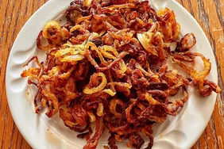

Air Fryer Crispy Onions

Description
These air fryer crispy onions are delicious over steaks, in burgers, or just as a side dish, plus this might be the easiest way to achieve golden, crispy onions ever.
Ingredients
- Quarter cup all purpose flour
- Half teaspoon cayenne pepper
- Quarter teaspoon salt, or to taste
- 1 onion, thinly sliced
- Avocado oil cooking spray
Steps
- Preheat an air fryer to 375 degrees F (190 degrees C) according to manufacturer's instructions.
- Combine flour, cayenne pepper, and salt in a bowl. Add onion slices and toss until well coated.
- Place onions in basket and spray with avocado oil. Air fry until golden brown, 18 to 23 minutes, shaking basket every 4 to 5 minutes